Kịch bản tự động
Kịch bản trả lời tự động của AhaChat được tạo bởi các block và kết nối với nhau bằng kéo thả. AhaChat hỗ trợ nhiều loại block khác nhau để giúp bạn tạo, thu thập và lưu thông tin khách hàng vào google sheet một cách dễ dàng.
1. Kịch bản trả lời tự động
Có 3 loại kịch bản trả lời tự động được AhaChat hỗ trợ:
- Kịch bản chào mừng có màu xanh dương.
- Kịch bản mặc định có màu xanh dương.
- Kịch bản từ khóa có màu xanh lá.
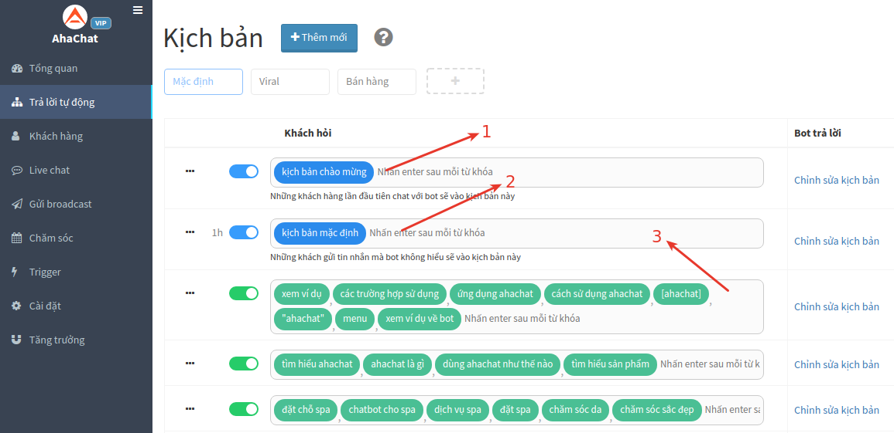
1.1 Kịch bản chào mừng
Chỉ chạy một lần duy nhất khi khách hàng bấm nút “Bắt Đầu”. Thông thường, kịch bản này được dùng để dẫn dắt câu chuyện trước khi hỏi khách hàng đang quan tâm điều gì.
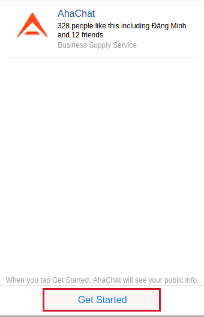
1.2 Kịch bản mặc định
Chỉ chạy khi khách nhắn tin không khớp với từ khóa nào. Bạn có thể cài đặt kịch bản luôn luôn chạy hoặc chỉ chạy một lần trong vòng 24 giờ. Thông thường, kịch bản này được dùng để thông báo cho khách biết rằng nhân viên sẽ online trả lời sau.
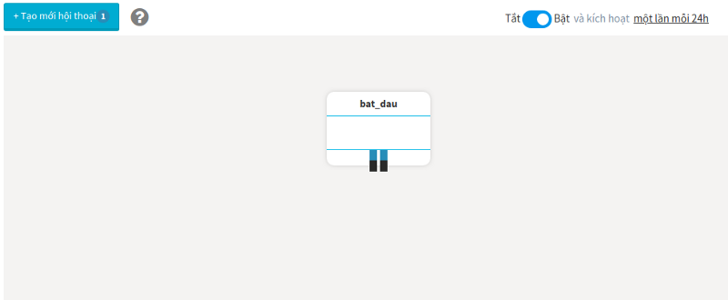
1.3 Kịch bản từ khóa
Được chạy khi khách nhắn tin khớp với từ khóa liên kết kịch bản. Thông thường, kịch bản này được dùng để đưa khách hàng vào phễu thu thập thông tin, sau đó liên kết đến các kịch bản từ khóa tiếp theo.
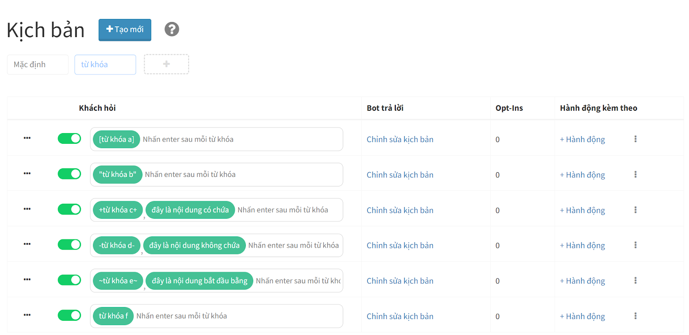
Có các loại từ khóa sau:
- từ khoá: Từ khóa tương tự - chỉ khi tin nhắn tương tự từ khóa thì bot mới trả lời
- [từ khoá]: Từ khóa chính xác - chỉ khi tin nhắn trùng khớp từ khóa này thì bot mới trả lời
- "từ khoá": Từ khóa chứa - chỉ khi tin nhắn có chứa từ khóa này thì bot mới trả lời
- +từ khoá+: Từ khóa bổ sung - chỉ khi tin nhắn phải chứa thêm từ khóa này thì bot mới trả lời
- -từ khoá-: Từ khóa loại trừ - chỉ khi tin nhắn không chứa từ khóa này thì bot mới trả lời
- ~từ khoá~: Từ khóa bắt đầu - chỉ khi tin nhắn bắt đầu với từ khóa này thì bot mới trả lời
- ☎️: Từ khóa có chứa số điện thoại - chỉ khi tin nhắn có chứa từ khóa này thì bot mới trả lời
- 👍: Từ khóa chứa biểu tượng Thumbs up - chỉ khi tin nhắn là từ khóa này thì bot mới trả lời
- :image: Từ khóa là hình ảnh - chỉ khi tin nhắn là hình ảnh thì bot mới trả lời
- :sticker: Từ khóa sticker - chỉ khi tin nhắn là nhãn dán thì bot mới trả lời
Ví dụ:
- Trường hợp 1: Tin nhắn có chứa từ khoá A, hoặc chứa từ khoá B, nhưng không chứa từ khoá C
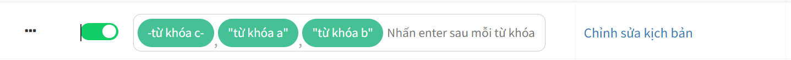
- Trường hợp 2: Tin nhắn có chứa từ khoá A, và chứa từ khoá B, nhưng không chứa từ khoá C
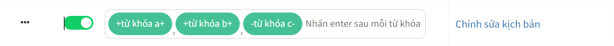
- Trường hợp 3: Tin nhắn có chứa từ khoá A, và chứa từ khoá B, nhưng không chứa từ khoá C và từ khoá D
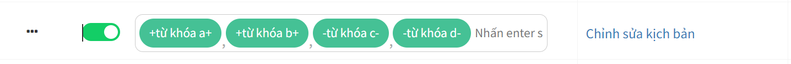
- Trường hợp 4: Tin nhắn bắt đầu với từ khoá A, và chứa từ khoá B, nhưng không chứa từ khoá C
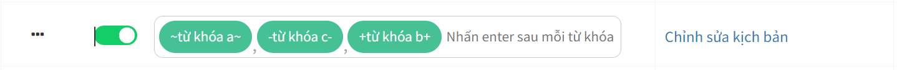
- Trường hợp 5: Tin nhắn có chứa số điện thoại, và chứa từ khoá B, nhưng không chứa từ khoá C
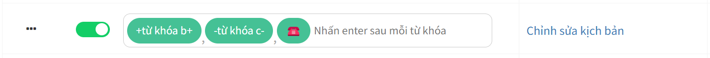
- Trường hợp 6: Tin nhắn là nút Like
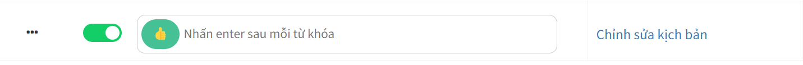
- Trường hợp 7: Tin nhắn là hình ảnh
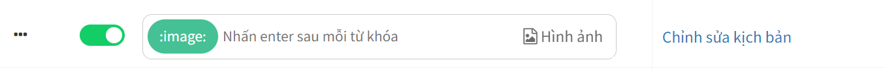
- Trường hợp 8: Tin nhắn là nhãn dán
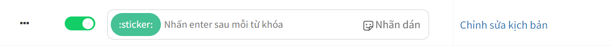
2. Block trong kịch bản
Block là thành phần quan trọng nhất cấu thành nên kịch bản. Một kịch thường có nhiều loại block khác nhau được nối lại với nhau tạo thành một luồng hoàn chỉnh theo ý đồ của chủ bot.
Xem chi tiết về cách tạo và nối Block tại đây.
2.1 Cách tạo mới Block
Vào menu Trả lời tự động > Tạo mới kịch bản. Sau đó chọn Block cần tạo ở nút bấm màu Xanh.
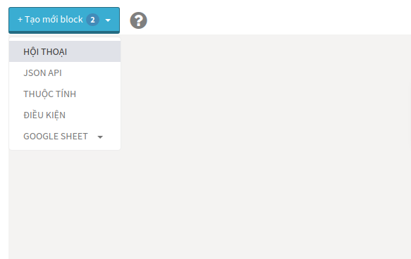
2.2 Thêm tin nhắn vào Block
Tin nhắn Block gồm có 2 phần là Tin nhắn của Bot và Tin nhắn của Khách. Tin nhắn của Bot là tin nhắn mà khách hàng sẽ nhìn thấy khi chat với bot. Còn Tin nhắn của Khách là tin nhắn mà bot chờ khách hàng nhập vào để lưu thông tin hoặc di chuyển xuống Block tiếp theo.
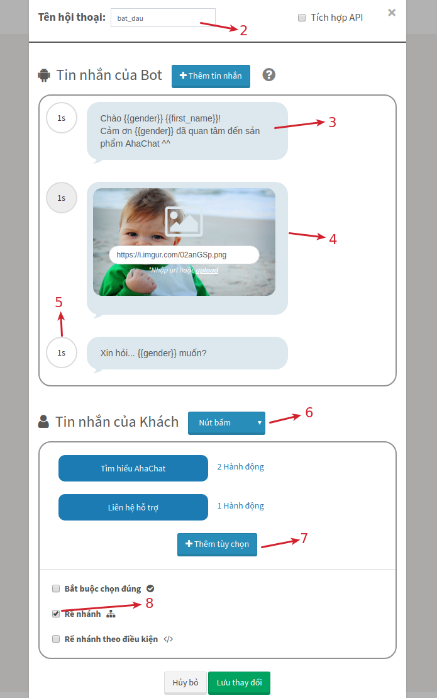
2: Tên hội thoại.
3: Tin nhắn văn bản của Bot, có thể dùng biến số {{gender}} để lấy giới tính và {{first_name}} để lấy tên của Khách hàng.
4: Tin nhắn hình ảnh của Bot
5: Cài đặt thời gian chờ xuất hiện của tin nhắn sau so với tin nhắn trước. Nếu tin nhắn càng dài nên đặt thời gian chờ càng lâu để có cảm giác chat với người.
6: Chọn loại tin nhắn của người dùng để trả lời (ở ví dụ này là nút bấm), ngoài nút bấm còn hỗ trợ: trả lời nhanh, văn bản, thẻ ảnh...
7: Thêm tùy chọn để thêm nút bấm.
8: Chọn rẽ nhánh để khi người dùng click vào nút bấm sẽ cho xuất hiện hội thoại tương ứng kế tiếp.
2.3 Kết nối các Block lại với nhau
Cách Block được nối với nhau bằng các nút màu đỏ để tạo kịch bản liền mạch.
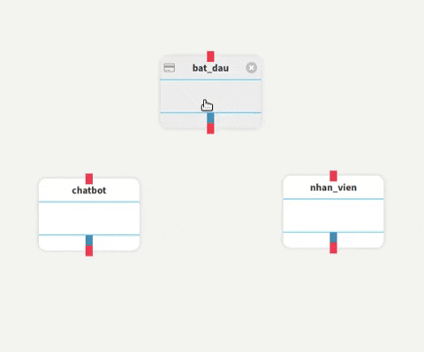
Bạn có bất kỳ câu hỏi nào liên quan đến Kịch bản trả lời tự động? Bạn muốn khởi chạy chiến dịch tiếp cận khách hàng của mình bằng Chatbot với một số lời khuyên chuyên môn từ Đối tác tiếp thị của Facebook? Đừng ngần ngại liên hệ với chúng tôi để có câu trả lời nhanh nhất và hiệu quả nhất! Tận hưởng công cụ chatbot miễn phí của chúng tôi mà không cần phải trả bất kỳ chi phí nào!